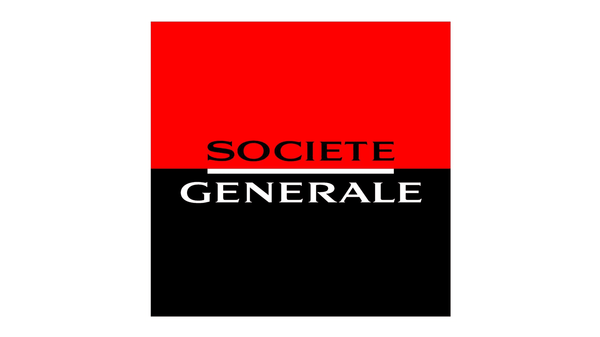

Testing Developer & Workflow Designer (2023 - )
Societe Generale Bank - Montreal, Canada
I built User Workflows for investment banking using internal tools
based on Camunda Framework.
I built over 10 Workflows with a usage scale of 50 persons per
month each.
Also I was developing a testing library based Playwright used by
more than 50 people within IT departments.
I was providing automated testing for each workflow released on
production while doing API migrations.
Full-Stack Developer & Scrum Master (2020-2022)
BNP Paribas Bank - Paris, France
I worked on internal solutions for project management and data
reportings.
The daily usage scale was of 50 persons per month.
I ensured the life cycle of different applications from the data
model to release in production.
As Ambassador of the dev-community I made presentation to
executives from Paris.
I enrolled the Scrum Master position for six months in a team of
15 people.
Developer/Designer JEE (2018-2019)
Dassault Aviation - Paris, France
Getting to grips with the solution's software architecture and
associated technologies
Development and implementation of Widgets solutions giving KPI's
on a 3D Platform
Automated Test Development Engineer (2017-2018)
Dassault-Systemes - Paris, France
Intervene on all aspects related to the testing business :
Methods and tools, functional and technical (Cucumber, TestNG,
JUnit) and mocking tools (Mockito, EasyMock and PowerMock).
Development of an automated testing framework in Java for the
3DEXPERIENCE platform based on Selenium, mainly focused on the
ENOVIA application.
Execution of test campaigns and skill building on testing tools.